Terre Procédurale
Code / Modélisation 3D
Le projet se découpe en 2 parties.
La première est la création de texture avec Processing.
La deuxième est la modélisation 3D à partir de ces textures qui me faisaient penser à des paysages.
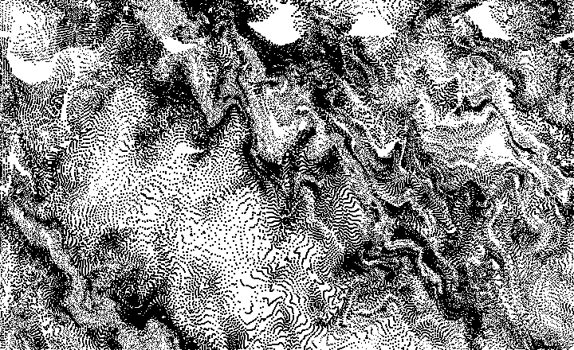
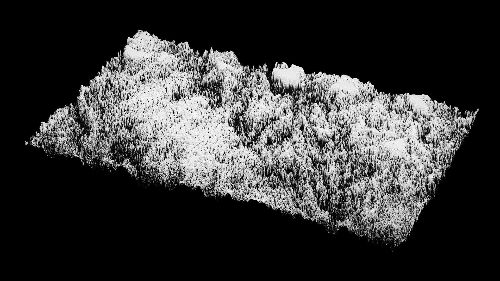
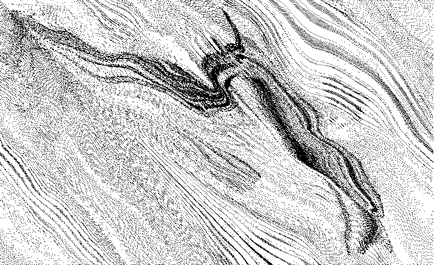
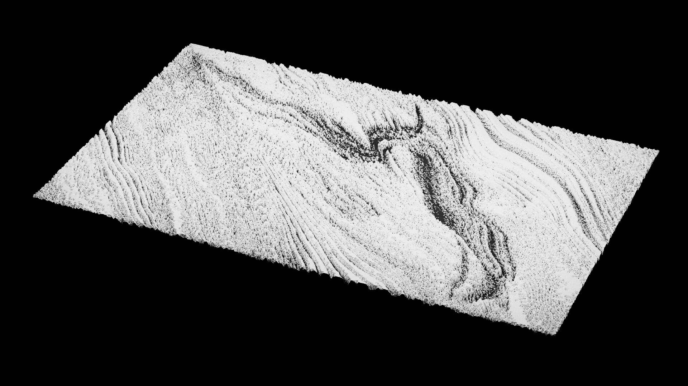
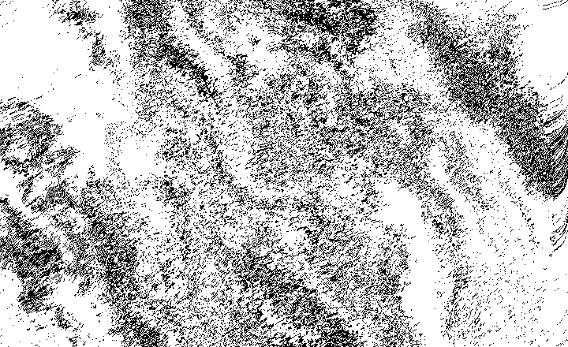
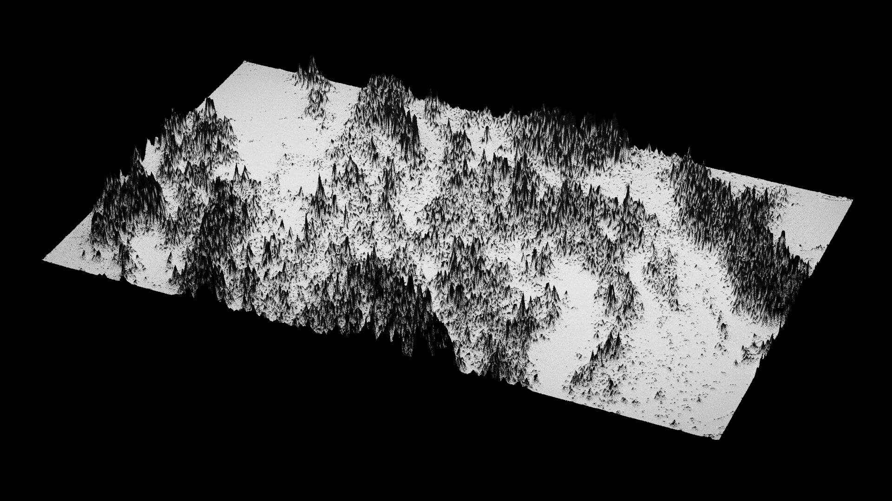
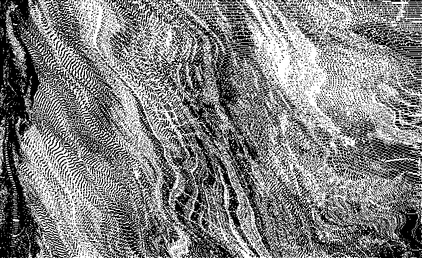
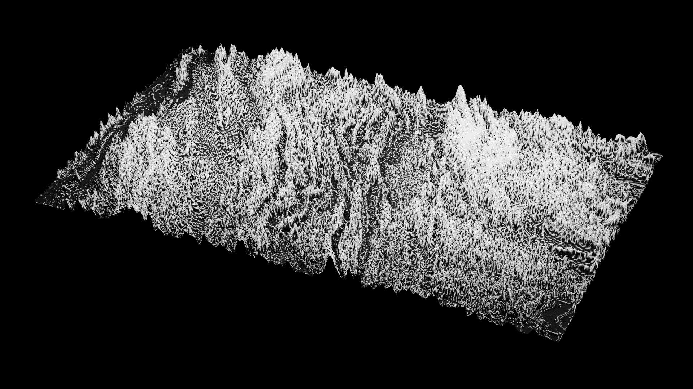
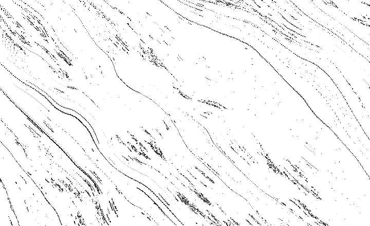
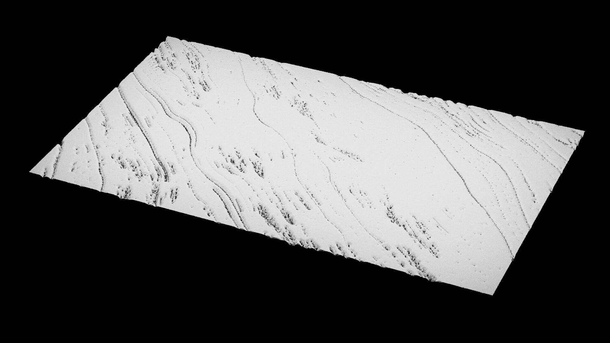
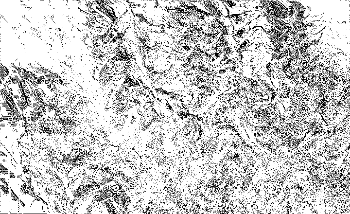
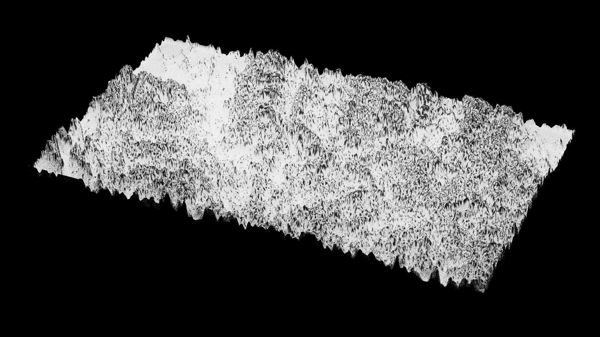
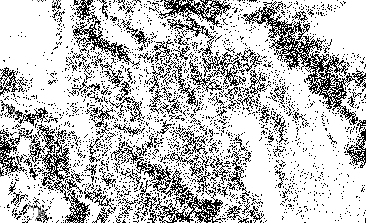
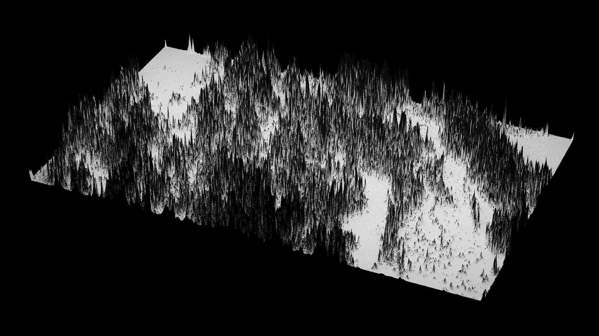